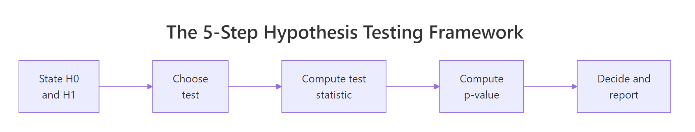
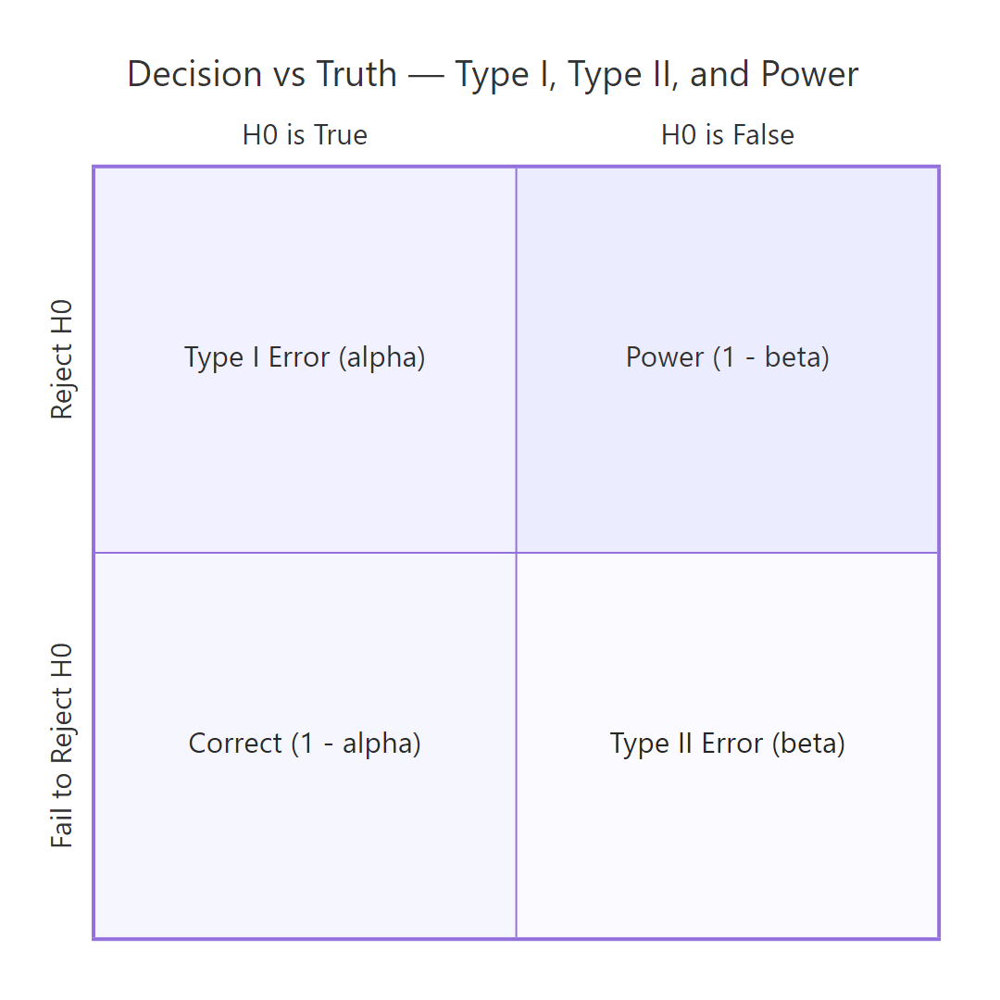
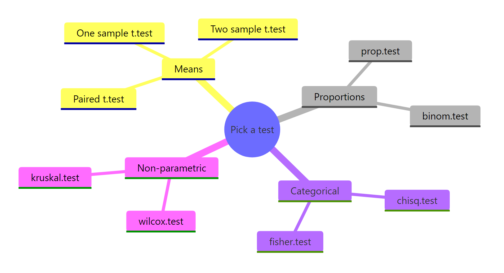

Hypothesis Testing in R: Understand the Framework, Not Just the p-Value
Hypothesis testing is a structured decision rule for asking, "Is this pattern in my data real, or could it have appeared by chance?" — and R gives you one consistent toolkit (t.test(), prop.test(), chisq.test(), and friends) for running it.
What is the hypothesis testing framework?
Most tutorials hand you a p-value and tell you "less than 0.05 means significant." That hides the actual machinery. Hypothesis testing is a five-step decision process: pick two competing claims, summarise your data into a single number, ask how surprising that number is if the boring claim were true, then decide. We'll run the whole loop in one block on the mtcars dataset, then unpack each step in the sections that follow.
Here is a complete one-sample t-test asking, "Is the average miles-per-gallon of the 32 cars in mtcars different from 20?" Watch the output — every later section explains one piece of it.
The sample mean (20.09) is essentially on top of our hypothesised 20, the t statistic is tiny (0.085), and the p-value of 0.93 says "this difference is exactly the kind of thing you'd see all the time if H₀ were true." So we keep H₀. Notice we never proved H₀ — we only failed to find evidence against it. That phrasing matters and we'll come back to it.
Try it: Re-run the same test against mu = 25 instead of 20. Predict before running: do you expect the p-value to go up or down?
Click to reveal solution
Explanation: The sample mean of 20.09 is far from 25 relative to its standard error, so the t statistic is large and the tail probability is tiny. We now have strong evidence to reject H₀.
How do you state the null and alternative hypothesis?
The null hypothesis (H₀) is always the boring, conservative claim — no difference, no effect, no relationship. The alternative hypothesis (H₁) is what you'd accept if the data forces you off H₀. You write them down before you look at the data, because the framework only makes sense when H₀ is the default you'd cling to without evidence.

Figure 1: The five-step decision loop every hypothesis test follows.
Let's compare 4-cylinder and 6-cylinder cars in mtcars. The question is whether their mean mpg differs. H₀: μ₄ = μ₆. H₁: μ₄ ≠ μ₆. The ~ formula in t.test() says "split mpg by cyl group."
The mean mpg gap is about 6.9 mpg, the t statistic is 4.7, and the p-value is 0.0004. That p-value says: "if 4-cyl and 6-cyl cars truly had the same mean mpg, you'd see a gap this big or bigger less than 1 time in 2,000." That's surprising enough to reject H₀.
Now suppose your scientific question was specifically directional: "Do 4-cyl cars have higher mpg than 6-cyl?" You'd use a one-sided test. R defaults to two-sided; switch with alternative = "greater".
The one-sided p-value is exactly half the two-sided value because the t distribution is symmetric — we're now only counting the right tail. One-sided tests have more power when the direction is genuinely pre-specified, but they're easy to abuse.
Try it: Write H₀ and H₁ for "do automatic and manual cars (am = 0 vs 1) differ in mpg?" Then run the two-sided t-test and report the decision at α = 0.05.
Click to reveal solution
H₀: mean mpg is the same for automatic and manual transmissions (μ_auto = μ_manual). H₁: the means differ.
Explanation: p ≈ 0.0014 is well below 0.05, so we reject H₀ and conclude the two transmission types have different mean mpg in this dataset.
What is a test statistic and why does it matter?
A test statistic compresses your entire dataset into a single number whose distribution is known under H₀. That known distribution is what lets you turn the number into a p-value. For the one-sample t-test the statistic is:
$$t = \frac{\bar{x} - \mu_0}{s / \sqrt{n}}$$
Where:
- $\bar{x}$ is the sample mean
- $\mu_0$ is the hypothesised value (the H₀ claim)
- $s$ is the sample standard deviation
- $n$ is the sample size
The numerator is the raw distance between the sample and H₀. The denominator — the standard error of the mean — is how much that distance would fluctuate just from random sampling. Dividing by it expresses the gap "in standard-error units." A t of 2 means "twice as far from H₀ as random noise would typically push you."
Let's compute the t statistic by hand from mtcars$mpg against μ₀ = 20 and confirm it matches t.test().
The two numbers agree exactly. The mean (20.09) sits 0.085 standard errors away from 20 — a hair's breadth, statistically speaking. That's why the test refuses to reject H₀.
Try it: Compute the t statistic by hand for iris$Sepal.Length against μ₀ = 5.5, then verify with t.test().
Click to reveal solution
Explanation: The sample mean (5.84) is roughly 5 standard errors above 5.5, so a one-sample t-test would strongly reject H₀: μ = 5.5.
What does the p-value really mean (and what doesn't it)?
The p-value is the answer to one specific question:
$$p = P(|T| \geq |t_{obs}| \mid H_0)$$
In words: "If H₀ were true, how often would the test statistic land at least as extreme as the value I just computed?" It's a tail-area probability under the null distribution. Nothing more, nothing less.
You can compute it yourself from the t statistic. For a two-sided test, find the area in both tails beyond |t| of the t distribution with n − 1 degrees of freedom.
Identical, as it must be. The p-value isn't magic — it's a direct lookup against a known distribution.
To make the conditional-probability definition concrete, here's a simulation: draw 10,000 datasets where H₀ truly holds (samples from N(0, 1) tested against μ₀ = 0), run a t-test on each, and look at the resulting p-values. If the p-value really is "a tail probability under H₀," its distribution should be uniform on [0, 1].
About 4.89% of p-values fall below 0.05 — exactly what "5% false-positive rate at α = 0.05" means. The histogram is flat, not piled near zero. A flat null distribution is the whole reason p < 0.05 means anything: under H₀ it almost never happens, so when you see it you have grounds to reject.
Try it: Predict the proportion of simulated p-values that fall below 0.10 when H₀ is true, then verify by running the simulation.
Click to reveal solution
Explanation: A uniform-on-[0,1] distribution puts probability c in any interval of length c, so the fraction of p-values below 0.10 should sit near 10%. The simulation confirms it — and this is the full mechanism behind why fixed α controls false-positive rate.
How do you make a decision and avoid Type I and Type II errors?
The decision rule is simple: pick a significance level α (typically 0.05) before you see the data, then reject H₀ if p < α. There are exactly two ways to be wrong, and they cost you different things.

Figure 2: Type I and Type II errors arise from the four cells of decision × truth.
A Type I error is rejecting H₀ when it's actually true — a false positive. Its long-run rate equals α, by construction. A Type II error is failing to reject H₀ when H₁ is true — a false negative, with rate β. Power = 1 − β is the probability of correctly rejecting a false H₀; it depends on the true effect size, the sample size, and α.
Let's verify the Type I rate empirically. Simulate 1,000 t-tests under H₀ and count the false positives.
Roughly 5.2% of tests rejected even though H₀ was true. That's α in action — it's the price you pay for the ability to ever reject anything.
Now power. Simulate the same test but with a true mean of 0.5 (so H₀: μ = 0 is false) and count the correct rejections.
About 76% of tests correctly rejected H₀ — that's our empirical power. The other 24% missed a real effect. Power goes up with sample size, with bigger true effects, and with looser α.
Try it: Re-run the power simulation with n = 50 (instead of 30). Predict before running: does power go up or down?
Click to reveal solution
Explanation: Bigger n shrinks the standard error, which inflates the t statistic for the same true effect, which pushes more tests into the rejection region. Power rose from ~0.76 (n=30) to ~0.94 (n=50).
How do you choose the right test for your data?
Test choice is dictated by the data structure and the question, not preference. A short decision tree covers most everyday cases:
| Data you have | Question | R function |
|---|---|---|
| One numeric variable | Differs from a fixed value? | t.test(x, mu = ...) |
| Two numeric groups (independent) | Means differ? | t.test(x ~ group) |
| Two numeric vectors (paired) | Mean difference ≠ 0? | t.test(x, y, paired = TRUE) |
| One proportion | Differs from a fixed value? | prop.test() or binom.test() |
| Two categorical variables | Independent? | chisq.test() or fisher.test() |
| Numeric, non-normal, small n | Distributions differ? | wilcox.test() |
Here's one call to each of four common tests, on appropriate data, so you can see the consistent output structure.
Notice every result object exposes $p.value, $statistic, and (for most) $conf.int. Once you've internalised the interface for one test, the rest follow the same shape.
statistic, p.value, parameter, conf.int. This is not a coincidence — it's a deliberate design that lets you write generic reporting code. extract_results <- function(test) c(test$statistic, p = test$p.value) works on t.test, wilcox.test, chisq.test, and most others.Try it: A team A/B-tested a checkout button: 24 of 200 control users converted (12%) and 30 of 200 treatment users converted (15%). Pick the right test, justify in one line, and run it.
Click to reveal solution
Test choice: prop.test(). Justification: we're comparing two independent sample proportions with reasonably large n, which is exactly what prop.test() is for.
Explanation: p ≈ 0.47 — well above 0.05, so we fail to reject H₀ (no evidence the conversion rates differ). The 3-percentage-point lift could easily be sampling noise at this sample size. To detect a real 3-point lift you'd need a much larger n — that's a power-analysis question.
Practice Exercises
These problems combine multiple concepts from the tutorial. They use distinct variable names (prefixed my_) so they don't overwrite the tutorial's notebook state.
Exercise 1: One-sided t-test with a stricter α
Using iris, test whether the mean petal length of versicolor is greater than 4.0 cm at α = 0.01. Save the t statistic to my_t and the p-value to my_p. State your decision in one sentence.
Click to reveal solution
Decision: p ≈ 0.0023 < 0.01, so we reject H₀ at α = 0.01. There is evidence that the mean petal length of versicolor irises exceeds 4.0 cm.
Exercise 2: Empirical power across sample sizes
Run a power study. For sample sizes n = 10, 20, 50, 100, simulate 500 datasets where the true mean is 0.4 (testing against H₀: μ = 0) and compute the empirical power at α = 0.05. Store the result in power_study as a data frame with columns n and power.
Click to reveal solution
Explanation: Power climbs steeply with n — at n = 10 we'd miss a real effect about 70% of the time, while at n = 100 we'd catch it almost always. This is the table you'd consult to plan sample size for a real study.
Complete Example: A Full Hypothesis Test, Reported Properly
Question: in the airquality dataset, does mean ozone differ between May and August? Walk through the full framework, then write up the result the way a paper would.
A paper-ready write-up of this result reads:
Mean ozone concentration in August (M = 59.1 ppb, n = 26) was significantly higher than in May (M = 23.6 ppb, n = 26), Welch's t(36.98) = -4.59, p < 0.001, 95% CI for the difference [-51.16, -19.84] ppb.
That single sentence carries every required piece of information: the direction and magnitude of the effect (means + difference), the test used and its degrees of freedom, the p-value, and a confidence interval. Notice we report the CI alongside the p-value — together they tell the reader both "is there an effect?" and "how big and how precisely measured?"
Summary

Figure 3: R's test families, organised by the data they accept.
The hypothesis testing framework is the same five steps no matter which test you run. Once you have the steps internalised, switching from t.test() to prop.test() to chisq.test() is just changing one function call.
| Step | What you do | R function / output field |
|---|---|---|
| 1 | State H₀ and H₁ before seeing data | (writing — your decision) |
| 2 | Choose the right test for your data shape | t.test(), prop.test(), chisq.test(), wilcox.test() |
| 3 | Compute the test statistic | $statistic |
| 4 | Compute the p-value | $p.value |
| 5 | Decide vs α, then report stat, df, p, CI, effect | compare to α; write up using all four |
The single most important takeaway: a p-value is P(data this extreme | H₀ true), never the probability that H₀ is true. Internalise that and you'll stop misreading results — and you'll start asking for the confidence interval and effect size that p-values can never give you.
References
- R Core Team — An Introduction to R. CRAN. Link
- Wickham, H. & Grolemund, G. — R for Data Science, 2nd Edition. Link
- Wasserstein, R.L. & Lazar, N.A. — The ASA's Statement on p-Values: Context, Process, and Purpose. The American Statistician, 70(2), 129-133 (2016). Link
- Greenland, S. et al. — Statistical tests, P values, confidence intervals, and power: a guide to misinterpretations. European Journal of Epidemiology, 31, 337-350 (2016). Link
- R documentation —
?t.test,?prop.test,?chisq.test,?wilcox.test. Run any of these at the R console for the canonical reference. - Cohen, J. — Statistical Power Analysis for the Behavioral Sciences, 2nd Edition. Routledge (1988).
- Dalpiaz, D. — Applied Statistics with R. Link
Continue Learning
- Confidence Intervals in R — the partner concept to hypothesis testing. Same data, different question: instead of "reject or not?" you ask "what range of values is plausible?" Most modern statisticians prefer reporting CIs alongside p-values.
- Effect Size in R (Cohen's d, η², r) — the "how big is it?" number that p-values cannot give you. Required for meta-analysis and any honest write-up.
- Power Analysis in R — calculate the sample size you need before you collect data. Stops you running underpowered studies that fail to detect real effects.